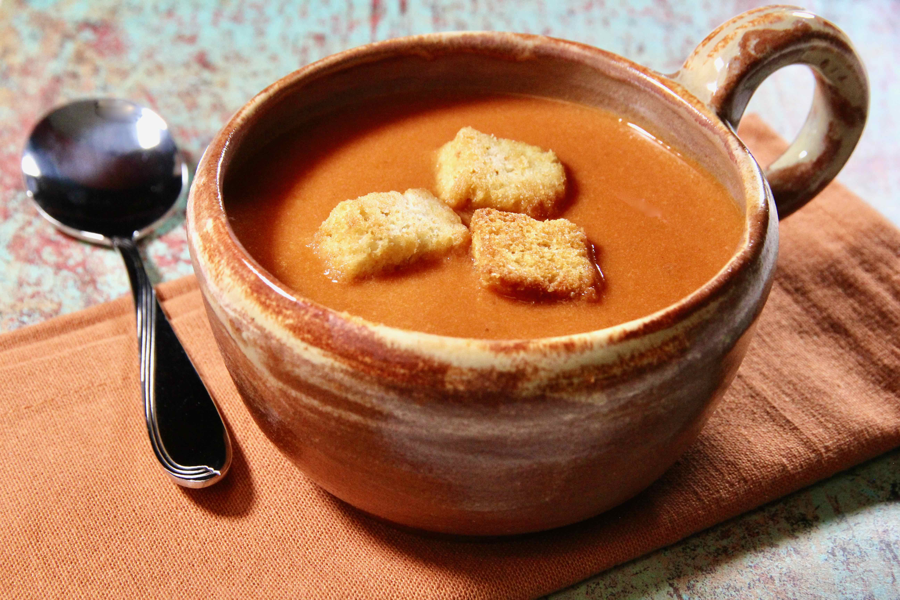

Tomato Soup

Description
This creamy tomato soup is not only easy to make but tastes amazing as well.
This soup is so easy it only takes 5 minutes to prepare and 20 minutes to cook
Ingredients
- 2 tablespoons butter
- 1 onion, chopped
- 2 tablespoons all-purpose flour
- 1 quart tomato juice
- salt to taste
- 2 cups milk
Steps
- In a Dutch oven, over medium heat, saute onions in butter until translucent. Remove from the heat.
- Stir in the flour so that no lumps remain, then slowly whisk in the tomato juice. Return to the heat and add salt to taste.
- Cook until just boiling but turn off the heat before it boils.
- Let cool 10 minutes then slowly stir in milk.
- Serve immediately.